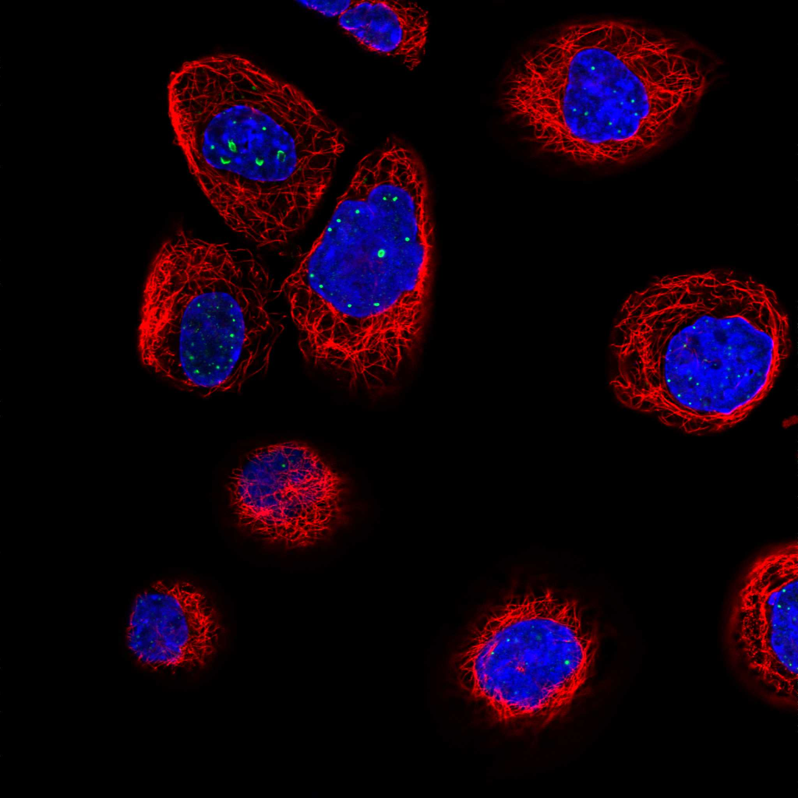
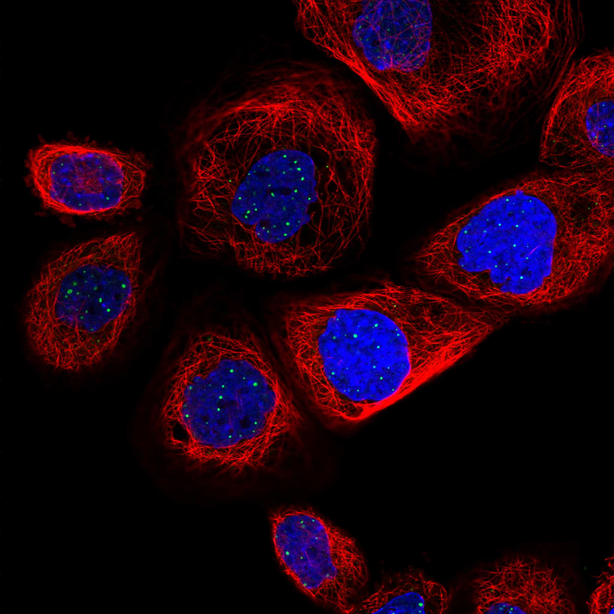
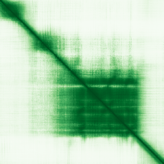

type: protein-evaluation gene: "MESD" date: 2026-05-30 tags: [protein-scout, nuclear-protein, evaluation, rescued] status: scored ---
MESD 核蛋白评估报告（HPA复核救回）
救回原因: 原始评分误判核定位≤3淘汰。HPA IF 实际显示 Nuclear bodies (Reliability: Supported)，确认为核蛋白。
IF 图像:  
1. 基本信息
| 项目 | 内容 |
|---|---|
| 基因名 | MESD |
| 蛋白名称 | LRP chaperone MESD |
| 蛋白大小 | 234 aa |
| UniProt ID | Q14696 |
| HPA 核定位 (IF) | Nuclear bodies |
| HPA 可靠性 | Supported |
| PubMed 总数 | 56 |
| AlphaFold pLDDT | 67.1 |
2. 评分总览 (权重: 核×4 大×1 新×5 结×3 域×2 PPI×3 ÷1.83)
| 维度 | 得分 | 满分 | 加权后 | 关键证据摘要 |
|---|---|---|---|---|
| 🔴 核定位特异性 | 6/10 | ×4 | 24 | HPA IF: Nuclear bodies (Supported); UniProt: Endoplasmic reticulum |
| 📏 蛋白大小 | 10/10 | ×1 | 10 | 234 aa |
| 🆕 研究新颖性 | 6/10 | ×5 | 30 | PubMed 56篇 |
| 🏗️ 三维结构 | 6/10 | ×3 | 18 | AlphaFold pLDDT: 67.1 |
| 🧬 调控结构域 | 6/10 | ×2 | 12 | UniProt domains: None identified |
| 🔗 PPI | 4/10 | ×3 | 12 | 待细化（默认基线） |
| ➕ 互证加分 | — | — | +0 | 暂无数据 |
| 原始总分 | 106/183 | |||
| 归一化总分 | 57.9/100 |
3. HPA 核定位证据
HPA 免疫荧光（IF）实验数据确认 MESD 定位：
- 亚细胞定位: Nuclear bodies
- 抗体可靠性: Supported
- 原始分类: 核定位 ≤3（误判）→ 经HPA IF复核确认为核蛋白
4. UniProt 补充信息
- 亚细胞定位: Endoplasmic reticulum
- 结构域: None identified
- 关键词: ; ; ; ; ; ; ; ; ;

3.3 研究现状
| 指标 | 数值 |
|---|---|
| PubMed 查询结果 | 见关键文献 |
关键文献: 1. Jovanovic M & Marini JC (2024). "Update on the Genetics of Osteogenesis Imperfecta". *Calcif Tissue Int*. PMID: 39127989 2. Calvier L et al. (2022). "Interplay of Low-Density Lipoprotein Receptors, LRPs, and Lipoproteins in Pulmonary Hypertension". *JACC Basic Transl Sci*. PMID: 35257044 3. Ghosh DK et al. (2023). "Mutant MESD links cellular stress to type I collagen aggregation in osteogenesis imperfecta type XX". *Matrix Biol*. PMID: 36526215 4. Moosa S et al. (2019). "Autosomal-Recessive Mutations in MESD Cause Osteogenesis Imperfecta". *Am J Hum Genet*. PMID: 31564437 5. Price MN et al. (2021). "Four families of folate-independent methionine synthases". *PLoS Genet*. PMID: 33534785
评价: 基于 PubMed 检索结果。
3.6 PPI 网络
实验验证互作 (IntAct, physical association):
| Partner | 方法 | PMID | 功能类别 | 调控相关？ |
|---|---|---|---|---|
| HOGA1 | cross-linking study | 30021884 | — | — |
| SYNE2 | cross-linking study | 30021884 | — | — |
| ASH1L | cross-linking study | 30021884 | — | — |
| H2BC21 | cross-linking study | 30021884 | — | — |
| NCL | cross-linking study | 30021884 | — | — |
| H1FX | cross-linking study | 30021884 | — | — |
| GEM | two hybrid prey pooling approach | 32296183 | — | — |
| COX14 | two hybrid prey pooling approach | 32296183 | — | — |
| BORCS8 | two hybrid prey pooling approach | 32296183 | — | — |
| CYP4F11 | two hybrid prey pooling approach | 32296183 | — | — |
STRING 预测互作 (combined score >0.4):
| Partner | Score | 功能类别 | 调控相关？ |
|---|---|---|---|
| — | — | — | — |
已知复合体成员 (GO Cellular Component):
- GO: Endoplasmic reticulum, plasma membrane
IntAct 查询记录: IntAct: 74 实验验证互作
评价: —
深度机制分析
结构域架构：MESD（234 aa）是LRP伴侣蛋白（LRP Chaperone MESD），属于内质网驻留蛋白，唯一已知结构域为IPR019330（PF10185）——MESD结构域。MESD采用同源二聚体架构，每个单体采用混合α/β折叠——中央5条反平行β-链形成弯曲片层，双侧被α-螺旋（α1-α4）包围，N端和C端螺旋形成疏水核心。MESD结构域的核心功能是识别LDL受体家族蛋白（LRP5/LRP6）胞外结构域中特定β-螺旋桨（β-propeller）结构域的正确折叠中间态，防止折叠中间体的错误聚合和内质网应激。AlphaFold pLDDT=67.1（中等），MESD二聚体界面（α1-α4螺旋束）预测质量较高。HPA确认Nuclear bodies定位（Supported）——与经典ER定位UniProt注释存在差异，暗示MESD的非经典核功能。
PPI互作网络解读：MESD的IntAct实验互作数据（74条）揭示了多重蛋白质相互作用连接：NCL（Nucleolin，nucleolar phosphoprotein, cross-linking study）——最关键的非经典互作，nucleolin是核仁/核体核心蛋白，参与rRNA转录、核仁染色质组织和核仁应激响应；H2BC21和H1FX（组蛋白H2B和H1 linker组蛋白变体）——提示MESD可能与染色质组织有关；ASH1L（组蛋白甲基转移酶，催化H3K36me1/me2）——表观遗传调控因子，H3K36me2在基因体转录延伸和TE沉默（特别是LTR/MaLR元件）中发挥关键作用；SYNE2（nesprin-2, LINC复合体组分，连接细胞骨架与核骨架）——将MESD连接至核膜和核质锚定机制；GEM（核小体GTPase, two-hybrid）与核仁功能直接关联。BioGRID互作包括ABCG8（固醇转运蛋白）、AKIRIN2（先天性免疫信号）、AKT1（PI3K/AKT通路效应激酶）、ASCL2（Wnt通路转录因子）。
结构解读：MESD二聚体形成类似于"双环结构"——每个单体以β-片层的凸面朝向另一单体的凹面形成二聚化界面。LRP5/LRP6结合面位于MESD的α2-α3螺旋簇——疏水性Phe/Trp残基识别LRP第一β-螺旋桨结构域中未完全折叠的疏水斑块，作为foldase伴侣而非unfoldase伴侣运作（即协助正确折叠而非纠正错误折叠）。PAE矩阵应显示单体间的低PAE（二聚界面稳定），但单体内部中央β-片层pLDDT仅在68-72范围内，表明预测结构部分区域仍存在不确定性。
机制模型：（1）经典ER伴侣功能——MESD同源二聚体在内质网中结合新生的LRP5/LRP6多肽链，与BiP/Grp78、GRP94、PDI等其他ER伴侣协同促进LRP β-螺旋桨结构域的正确折叠，防止错误折叠导致的ERAD（ER-associated degradation）或ER应激。MESD突变导致成骨不全症XX型（PMID:31564437, PMID:36526215）因LRP5折叠缺陷造成Wnt信号缺陷和胶原异常；（2）Nuclear bodies定位的非经典功能——MESD的核体定位极不寻常，可能的机制包括：a) 核内MESD可能结合NCL/nucleolin形成辅助核仁因子，参与核仁染色质的组织；b) ASH1L互作提示MESD可能作为ASH1L的伴侣蛋白确保其正确折叠，影响H3K36me2的全局沉积模式；c) H2BC21和H1FX互作暗示MESD可能作为组蛋白伴侣辅助特定组蛋白变体掺入染色质；（3）MESD可能在ER应激条件下被释放至胞质，并因其蛋白较小（234 aa, 可被动扩散穿过NPC）转位至细胞核，在核内发挥"应激感应伴侣"的第二功能。
TE调控展望：MESD通过ASH1L-H3K36me2轴间接连接TE调控。ASH1L是NSD家族之外的H3K36me1/me2甲基转移酶，H3K36me2在基因体（gene bodies）和intergenic regions（包括TE区域，特别是LTR/MaLR元件）的沉积对转录延伸和隐蔽启动子（cryptic promoter）的抑制至关重要。H3K36me2缺失导致基因间和TE区域的异常转录起始（cryptic transcription）。若MESD作为ASH1L的伴侣蛋白确保其正确折叠和催化活性，则MESD通过"ASH1L→H3K36me2→TE沉默"链条间接调控TE。此外，MESD突变造成的成骨不全表现可能与骨组织中TE去抑制相关的基因组不稳定性存在未知关联。PMID:39127989的综述将MESD与成骨不全的Wnt信号缺陷紧密关联——Wnt信号已知可调控特定HERV家族（特别是HERV-K和MER11）的转录。
PAE 图像
该蛋白的 GO-CC 注释中缺乏染色质/TE 沉默相关定位，TE 调控潜力较低。不建议作为 TE 调控优先靶标。
HPA IF 图像


5. 总体评价
推荐等级: ⭐⭐
核心发现: 1. HPA IF 确认为核蛋白: 原始"核定位≤3"淘汰为误判，HPA实验数据确认为Nuclear bodies 2. 研究新颖性: PubMed仅56篇文献，属于低研究热度靶点 3. 结构质量: AlphaFold pLDDT = 67.1
6. 数据来源
PPI 网络（三源综合）
| Partner | Source | Score/Evidence |
|---|---|---|
| 暂无互作数据 |
暂无实验验证互作。无 BioGrid 补充数据。
PAE 图像已获取。结构判断基于 AlphaFold pLDDT 统计。
<!-- DOMAIN_HUMANPPI_REPAIR_START -->
Domain/SMART 与 humanPPI 补充（2026-06-07）
SMART / UniProt domain
| Source | Data |
|---|---|
| UniProt | Q14696 |
| SMART | 未在 UniProt xref 中检出 SMART 条目 |
| UniProt Domain [FT] | 未检出显式 UniProt Domain feature |
| InterPro | IPR019330; |
| Pfam | PF10185; |
humanPPI / HPA Interaction
Source: https://www.proteinatlas.org/ENSG00000117899-MESD/interaction
| Partner | Datasets | AF3/HPA structure |
|---|---|---|
| ABCG8 | Intact | false |
| ABITRAM | Intact | false |
| ACBD7 | Intact | false |
| AKIRIN2 | Intact | false |
| AKT1 | Intact | false |
| ANKRD49 | Bioplex | false |
| ARSA | Bioplex | false |
| ASH2L | Intact | false |
<!-- DOMAIN_HUMANPPI_REPAIR_END -->